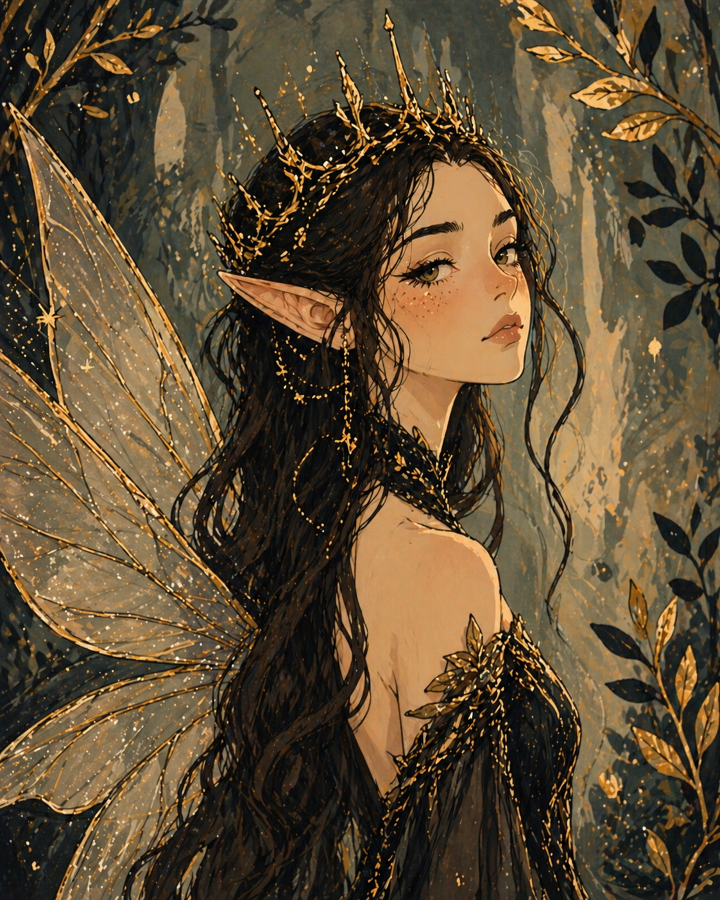
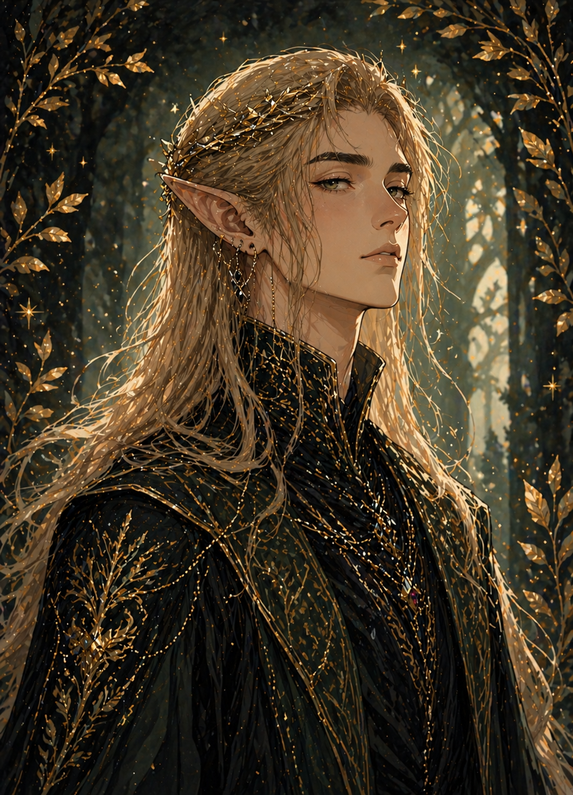
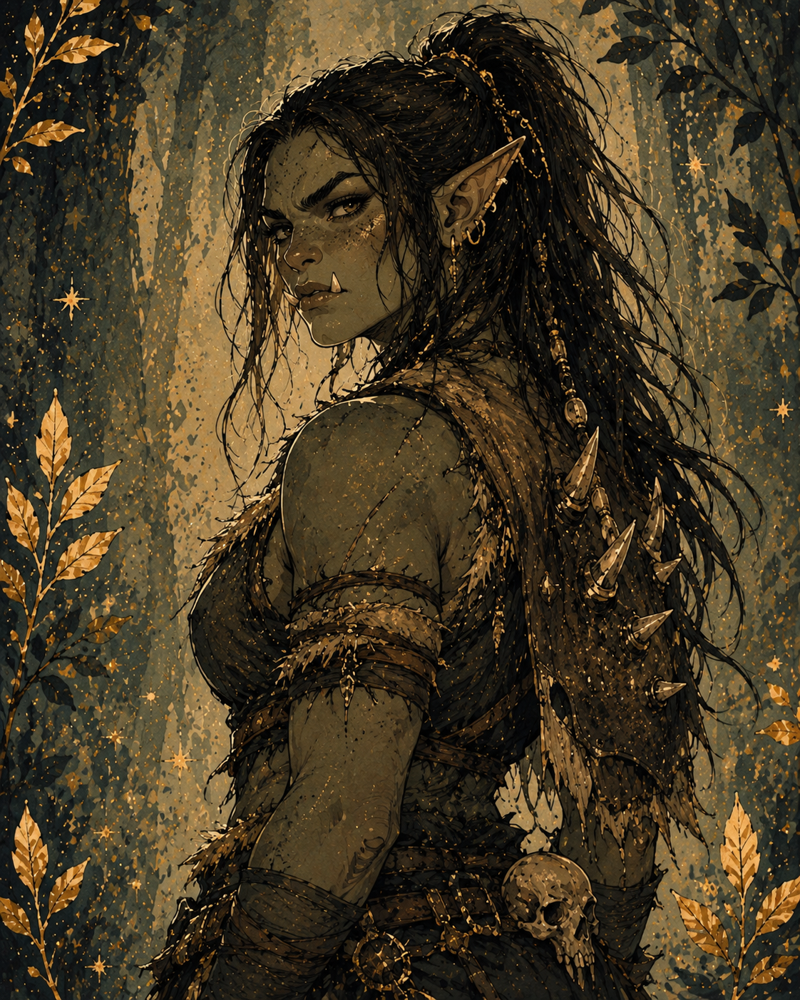
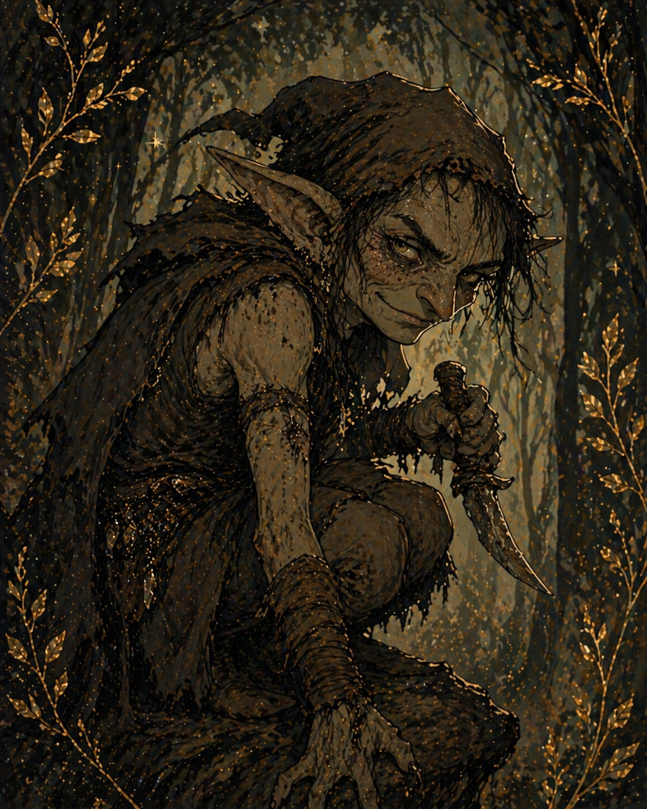
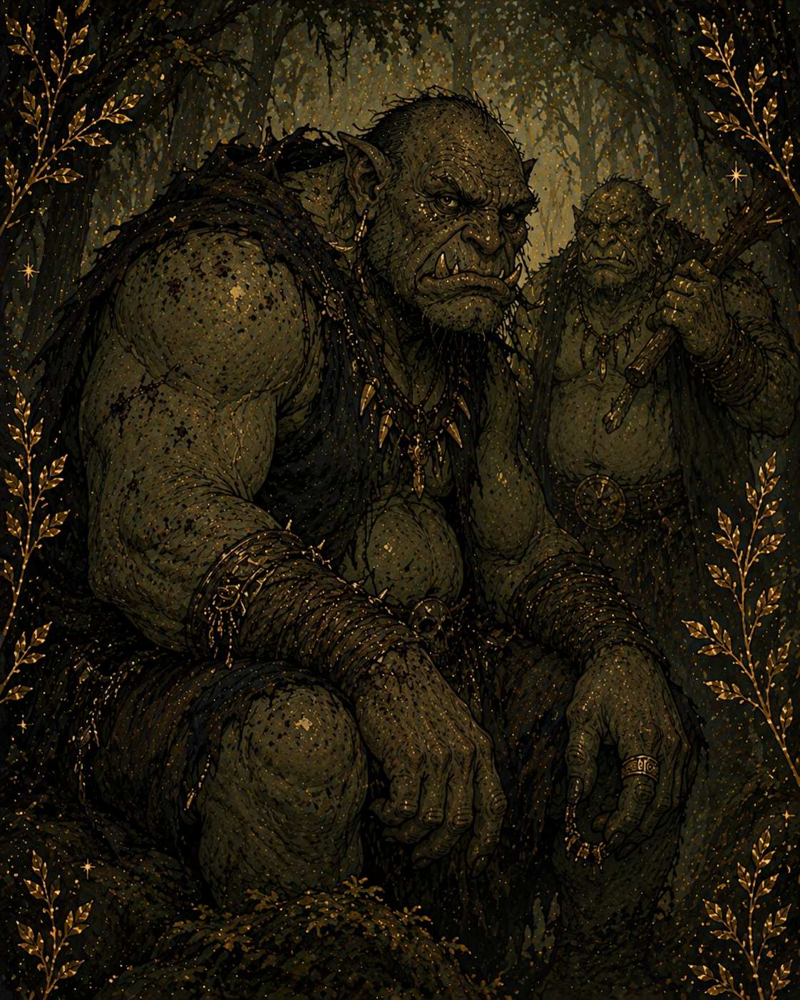
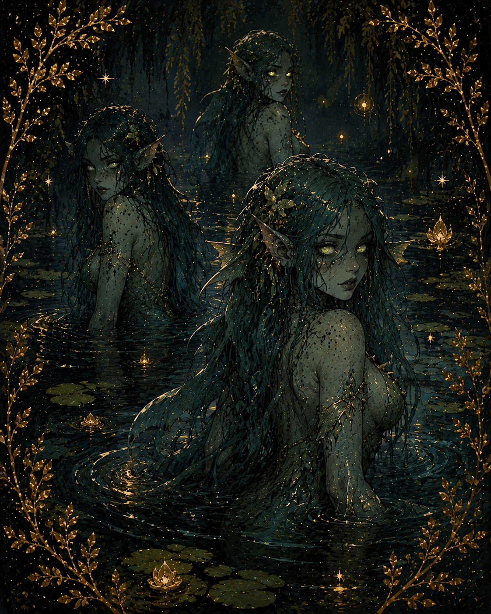
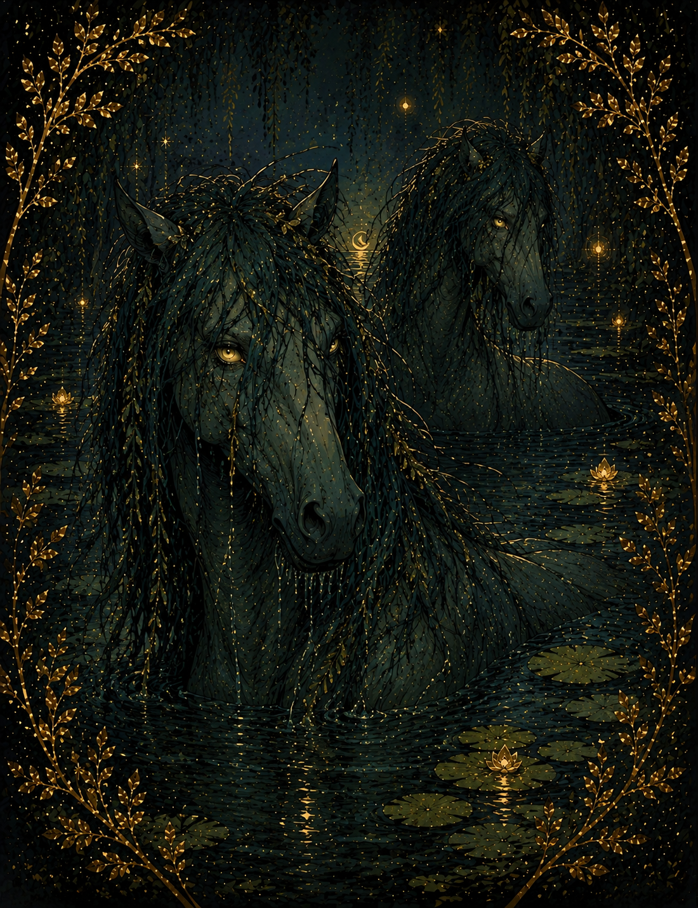
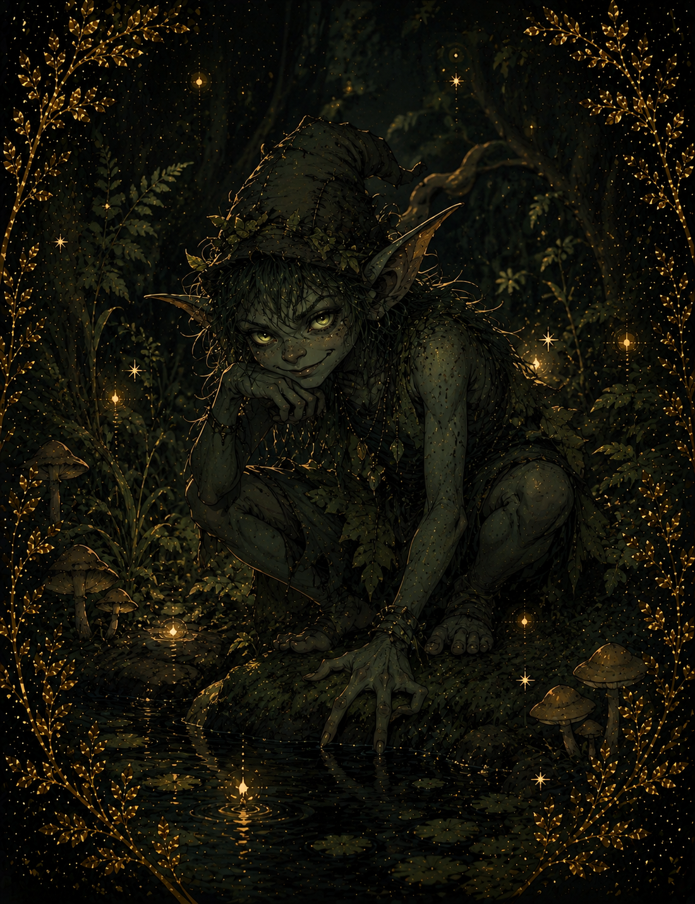
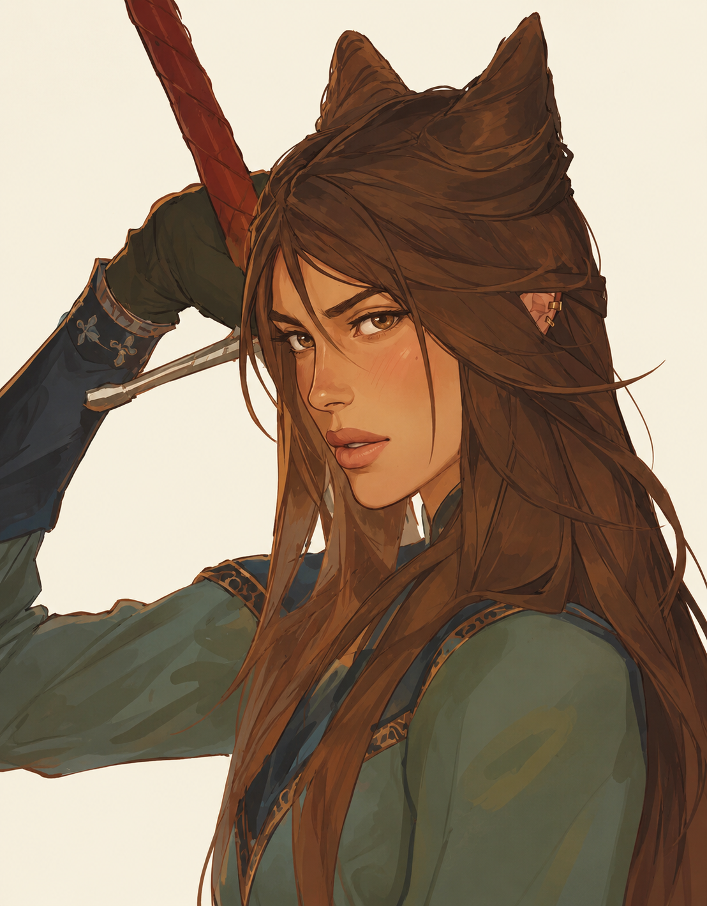

Entre Espinhos e Coroas
Em Elfhame, a beleza raramente é sinal de inocência. Por trás de rostos encantadores e promessas sedutoras, habitam criaturas antigas, moldadas por poder, orgulho e segredos que jamais deveriam ser revelados. Cada olhar pode esconder uma intenção, cada palavra pode carregar uma armadilha, e cada encontro pode custar mais do que se está disposto a perder. Neste reino, o perigo não se anuncia — ele observa, paciente, à espera do momento certo. Este é o Bestiário de Elfhame, um registro dos seres que caminham entre encanto e crueldade, onde conhecer demais pode ser tão arriscado quanto não saber o suficiente.

São os seres principais do mundo de Elfhame. Apesar do nome “fadas”, elas não são necessariamente gentis: podem ser belas, cruéis, enganosas ou perigosas. São imortais ou de vida muito longa e seguem regras mágicas rígidas, como não poder mentir diretamente.

São os nobres do mundo feérico. Poderosos, inteligentes e politicamente influentes, vivem nas cortes e comandam grande parte das terras mágicas. Muitos possuem habilidades mágicas e são extremamente orgulhosos.

Criaturas fortes, brutais e com aparência intimidadora. Diferente dos ogros, possuem mais inteligência e organização, muitas vezes vivendo em grupos ou clãs. São temidos por sua força e resistência, podendo atuar como guerreiros ou mercenários no mundo feérico.

Seres feéricos menores, geralmente ligados a trabalhos ou funções mais simples. Podem ser traiçoeiros, mas também servem como mensageiros, comerciantes ou servos no mundo de Elfhame.

Criaturas grandes, fortes e perigosas. São mais selvagens do que inteligentes, e costumam viver em áreas isoladas ou perigosas. São vistos como ameaças por outras espécies feéricas.

Seres aquáticos ligados a lagos e rios. São sedutores e enganosos, capazes de atrair humanos e feéricos para a água. Costumam ser difíceis de confiar.

Espíritos de água que geralmente aparecem como cavalos lindos. Mas sua verdadeira natureza é mortal: eles podem arrastar suas vítimas para a morte em rios e lagos.

Pequenas criaturas travessas que gostam de causar confusão e pequenos caos. Não são extremamente perigosas, mas podem ser irritantes e enganosas.

São os mortais do Reino Mortal. Não possuem magia nem vida longa, mas são inteligentes, adaptáveis e muitas vezes subestimados pelos feéricos.